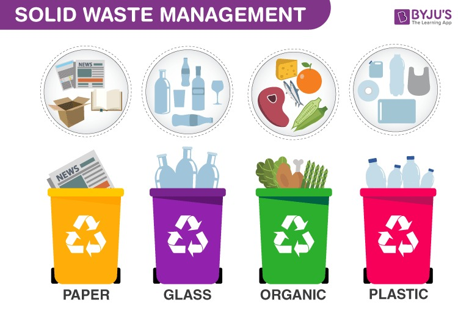

What is Domestic Waste Management
Domestic waste management refers to the collection, transportation, processing, recycling, and disposal of waste generated by households. It encompasses various activities and practices aimed at effectively managing and minimizing the environmental impact of the waste produced within residential areas.
What Are The Main Objectives Of Waste Management
A lot of garbage is generated daily by businesses of all sizes. It’s critical to treat waste management responsibly to protect the environment. Waste and recycling services can become expensive, but there are ways to save on these expenses. Before discussing the various perspectives, it’s essential to answer the question, what are the main objectives of waste management? The primary goals are as follows.
Process Involved In Waste Management
Collection: This involves the gathering of waste from individual households. Municipalities or waste management organizations typically provide collection services using trucks or other vehicles.
Transportation: Collected waste is then transported to facilities such as transfer stations or sorting centers. The transportation process may involve different methods, including trucks, compactors, or other specialized vehicles.
Processing and Sorting: Once at the facility, waste is sorted and processed. This can include separating recyclable materials from non-recyclables, composting organic waste, and preparing the remaining waste for proper disposal.
Recycling: Materials that can be recycled, such as paper, glass, plastic, and metal, are sent to recycling facilities. Recycling helps reduce the demand for new raw materials and minimizes the environmental impact associated with extraction and production.
Disposal: Non-recyclable and non-compostable waste is disposed of in a manner that minimizes environmental harm. Common disposal methods include landfilling or waste-to-energy processes
Education and Awareness: Public education plays a crucial role in domestic waste management. Informing residents about proper waste separation, recycling practices, and the importance of reducing waste can contribute to more effective waste management
Different Types of Waste Management
Effective domestic waste management is essential for maintaining environmental sustainability, preventing pollution, and conserving resources. It requires a coordinated effort from households, local governments, and waste management organizations to implement and follow sustainable practices.
- Recycling makes a huge difference in protecting the environment. Amongst the various types of waste management, recycling means that garbage is not disposed of in landfills or water sources by making usable litter components. Many entities/communities have made it easier to recycle goods by introducing labelling to show whether or not a material is recyclable.

- Incineration of waste includes the disposal of waste materials by means of burning. The thermal treatment is another name for this disposal method. You may incinerate on a commercial or human scale and dispose of a broad variety of waste materials. Most countries with limited land consider the incineration process. You may use the power produced by burning waste materials to produce heat, energy or steam. One of the drawbacks of this disposal process is that it can be a source of air pollutio

- Landfill is one of the most popular types of waste management systems in the world. It includes the collection, transportation, disposal and burying of waste in designated property. Many towns are planning deserted and barren areas to cope with waste.

-
Biological Reprocessing Chemical waste materials, such as kitchen waste and paper goods, can be reused after a procedure called biological reprocessing which is another popular system amongst the varied types of waste management. Multiple physiological systems, including recycling and biomass gasification, are used in biological reprocessing. Composing is a normal biological mechanism that is carried out under control conditions. One of the ends of the stock is natural gas, which is used to produce heat and electricity. Biological reprocessing is commonly used for the disposal of industrial waste

Effective way of Managing Waste
- Obviously trying to reduce the amount of waste generated at the source of waste generation, or the waste must be treated before discharge from the source.
- Finding out the reusable materials from the waste and reusing them.
- Segregating the waste into 'Biodegradable' and 'Non – Biodegradable waste.'
- Recycling of various waste materials, that can be effectively put to use at some other place.
- Ensuring proper waste disposal, like a sanitary landfill, incineration, and other processes of waste disposal must be carried out under the supervision and by following emission norms.
Impact of Waste Management
Improper handling of waste may lead to contamination of surface water, ground water, land, and the air. For instance, when waste is illegally dumped along roadsides, in the woods, in illegal dumps, in wetlands, in lakes and streams, or by being improperly burned, these are all examples of improper handling. Once waste affects the environment, it can:
- Cause potential threats to human health
- Harm or kill animals
- Damage plants and natural resources
- Spread of diseases